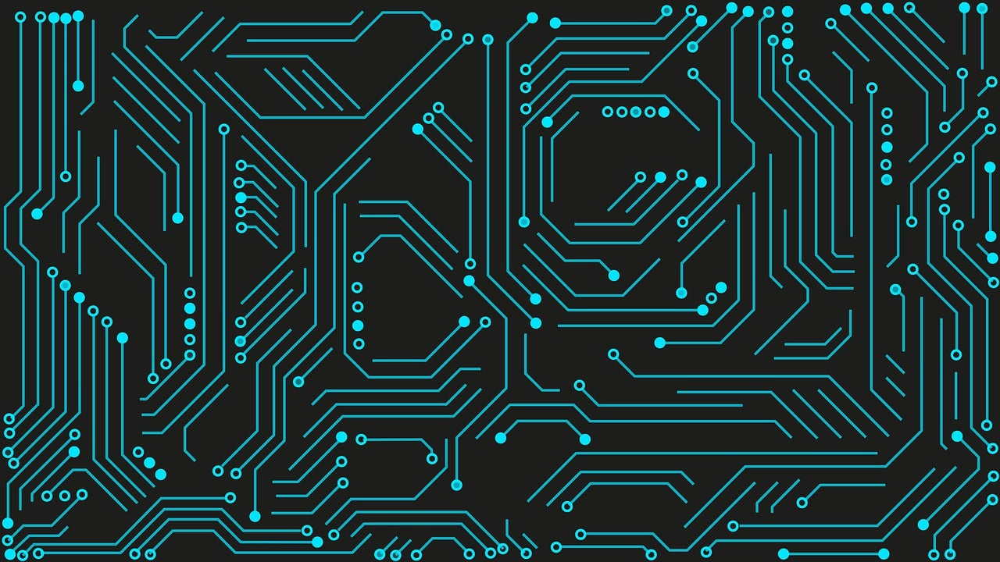

Hardware é a parte física e tangível de um sistema de computador. Inclui todos os componentes físicos necessários para que um computador funcione.Isso abrange desde a unidade central de processamento (CPU), que executa instruções, até dispositivos de entrada como teclados e mouse, dispositivos de saída como monitores e impressoras, e componentes de armazenamento como discos rígidos e unidades de estado sólido (SSDs). O hardware é essencial para executar operações computacionais e fornecer uma estrutura física para a interação do usuário com o sistema
Software refere-se aos programas e dados que instruem o hardware sobre o que fazer. Ele engloba todos os programas, aplicativos e sistemas operacionais que permitem que um computador execute tarefas específicas. O software pode ser categorizado em duas principais categorias: software de sistema e software de aplicativo. O software de sistema inclui sistemas operacionais e utilitários que controlam e gerenciam o hardware, enquanto o software de aplicativo abrange programas projetados para realizar tarefas específicas para os usuários, como processadores de texto, navegadores da web e jogos. O software é fundamental para aproveitar todo o potencial do hardware e facilitar a interação do usuário com o sistema.